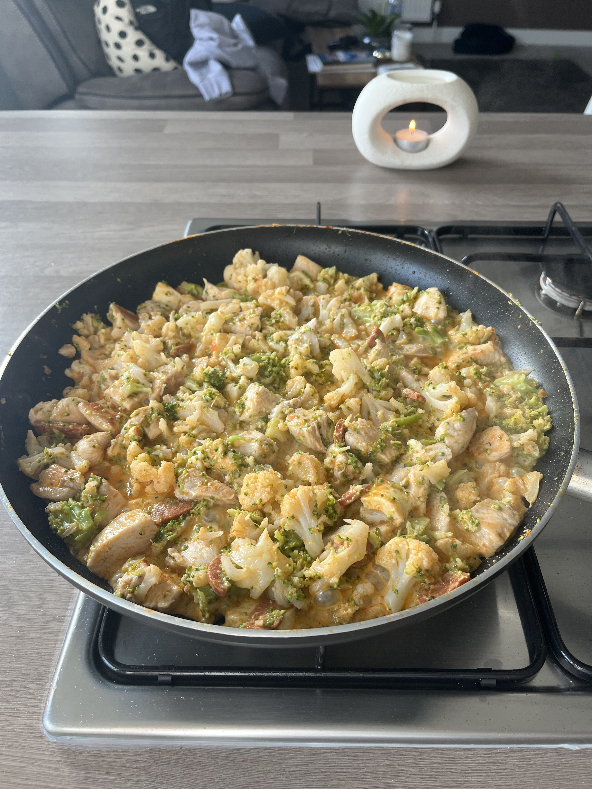

Finished Scran
Instructions
Get your ingredients out ready!
Place veg into boiling water and allow to soften
Chop chicken into chunks
Chop Chorizo into chunks
Chop halloumi into chunks
Place oil into a pan allow it to get to a high heat and then add your chicken
Cook for around 3 minutes until completly white on the outside
Add your chorizo and cook with chicken for around 2 minutes
Add halloumi and cook for a further 2 minutes
Once the veg is done drain 95% of the water and then add to pan with meat
break up the broccoli and cauliflower so it looks like grains of rice or a bit bigger up to you
Add your cream cheese and mix until you have a creamy look just like the picture
Serve with some siracha mayo and enjoy.